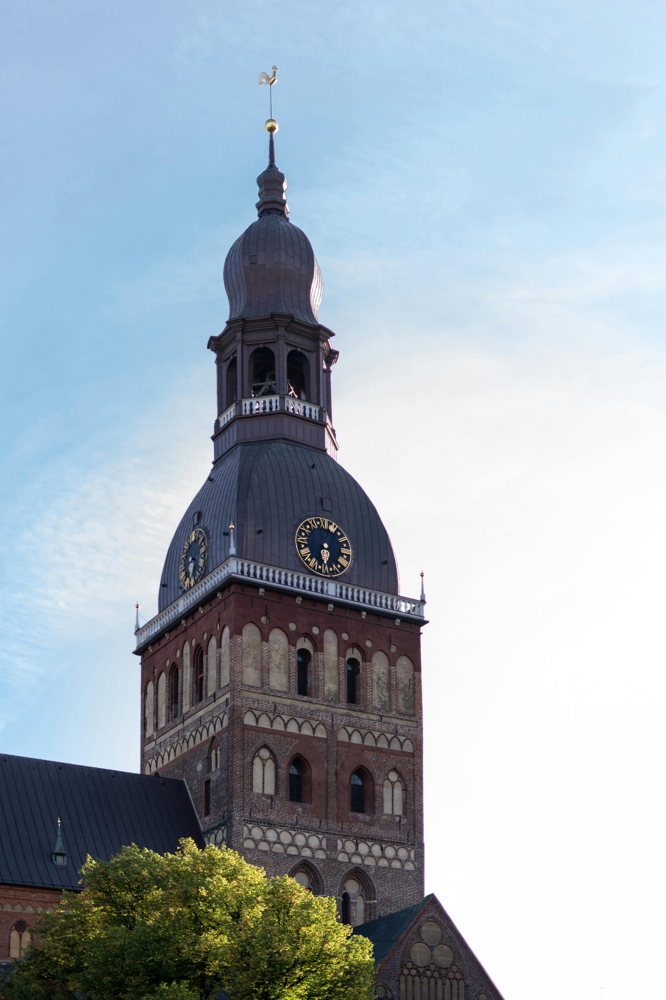
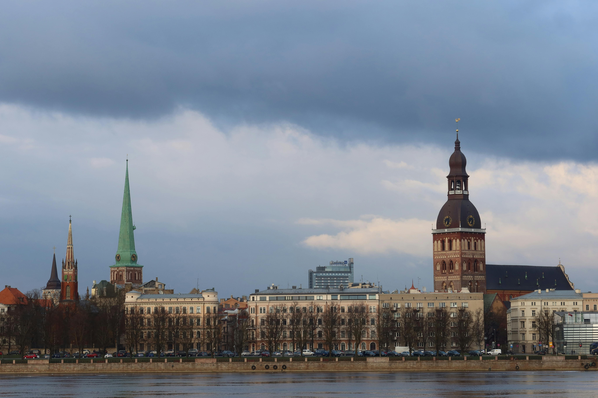
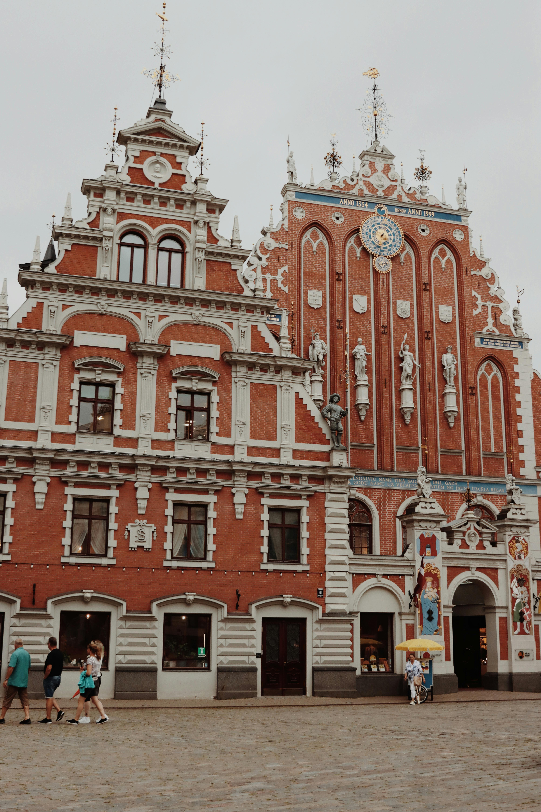
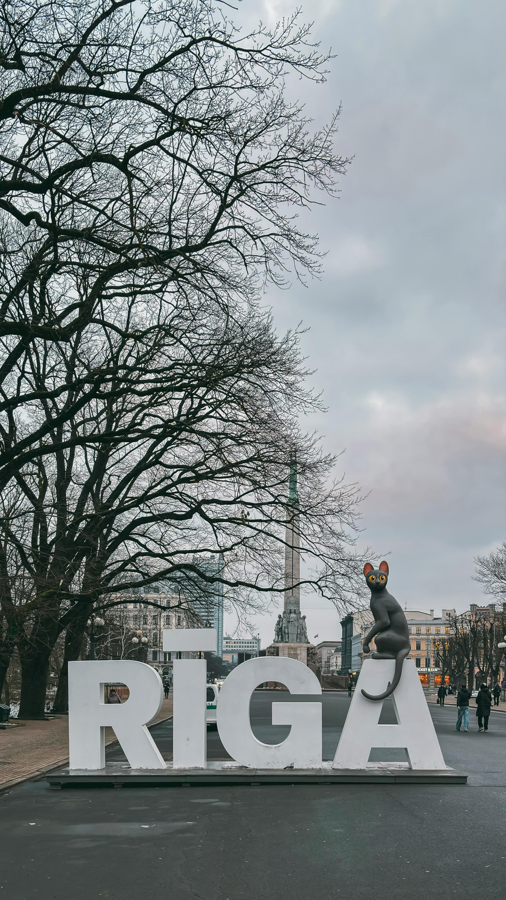

Back in 2015, we spent three nights in Riga and completely fell for the city’s mix of medieval charm, Soviet history, cosy cafés and lively nightlife. Latvia’s capital felt elegant but slightly rough around the edges in the best possible way — colourful Old Town streets, huge market halls, hidden bars and beautiful parks all blended together into one of the most unexpectedly memorable city breaks we’ve ever taken.
What this trip gave us:
The story
Back in 2015, we spent three nights in Riga, and it turned out to be one of those unexpectedly brilliant European city breaks that really sticks in the memory. Riga had this mix of old-world charm, slightly crumbling Soviet history, cosy cafés and lively bars that made it feel very different from anywhere else we had visited at the time.
We based ourselves around the beautiful Old Town, wandering through the cobbled streets lined with colourful buildings, church spires and hidden courtyards. Riga is one of those cities where you constantly stumble across little squares, tucked-away cafés and beautiful architecture without even really trying.
We definitely explored places like the stunning House of the Black Heads, Dome Square and the enormous Riga Central Market, which was unlike any market we had ever seen before. The market is set inside gigantic former Zeppelin hangars and was packed with local food, cakes, meats, souvenirs and little cafés. Even now it still stands out as one of the most unique markets we’ve visited anywhere in Europe.
The city itself had a really relaxed atmosphere, especially around the canal, bridges and parks. Riga managed to feel lively without ever feeling overwhelming. During the day we spent hours simply wandering around soaking up the atmosphere before settling into cosy cafés or bars as evening arrived.
One thing we both remember about Riga was how affordable it felt compared to other European capitals at the time. We could pop into cafés, enjoy hearty Latvian food and sample local beers without constantly worrying about the budget, which made the whole trip feel relaxed and easy-going.
Riga also had a surprisingly lively nightlife scene, with underground bars, live music venues and busy outdoor terraces dotted around the Old Town. The atmosphere at night was brilliant — lively enough to feel exciting but still compact and friendly.
During the trip we also took a day tour to Sigulda, often called the “Switzerland of Latvia.” Surrounded by forests, valleys and the beautiful Gauja National Park, Sigulda felt completely different from Riga. We remember castle ruins, scenic countryside views and the sense of escaping into rural Latvia for the day.
Looking back now, Riga felt like one of those hidden-gem European cities before it became more widely discovered. It had history, character, affordability and just enough rough-around- the-edges charm to make the trip memorable. Even years later, we still remember the atmosphere of the Old Town, the architecture and the feeling of discovering somewhere a little different from the usual European city break destinations.
Cobbled streets, colourful medieval buildings, hidden courtyards and church spires — Riga’s Old Town felt atmospheric and endlessly walkable.
One of the most unusual markets we’ve visited anywhere in Europe — giant Zeppelin hangars filled with local food, cakes, meats, beers and souvenirs.
Riga’s bars and cafés were lively but affordable, making it easy to enjoy the city without constantly stressing about the budget.
Medieval castle ruins, forests, valleys and Gauja National Park made Sigulda feel like a completely different side of Latvia.
Riga had a calm, laid-back feel with canals, parks and riverside walks balancing out the busy Old Town streets.
Before Riga became a mainstream city-break destination, it still felt authentic, affordable and wonderfully underrated.
Medieval streets, colourful architecture, Baltic history and relaxed city-break vibes in one of Europe’s most underrated capitals.




Looking for somewhere to stay in Riga? Browse hotels and accommodation deals through Klook.
Disclosure: This is an affiliate link and we may earn a small commission if you book through it at no extra cost to you.
From Riga walking tours and food experiences to Sigulda day trips and canal cruises — browse Latvia activities here:
Disclosure: If you book through these links we may earn a small commission at no extra cost to you.